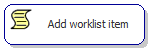
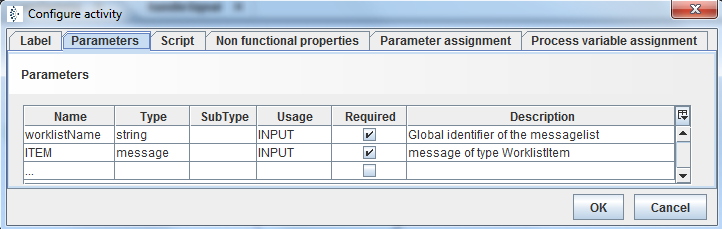

Add worklist item

Topic content
Description
Add a DICOM message to DICOM worklist.
Purpose of object
This scriptlet is used to add a DICOM message to a DICOM worklist which actually is a named message list.
The creation timestamp is set as property CREATEDAT and CHANGEDAT of the message list entry.
Create
In the process model editor open the panel named process, open the tree node DICOM worklist, select the node Add worklist item and click into the process model to create a new invocation of this scriptlet.
Icon

Configuration
Properties and Parameter assignment
The assignment sections define the assignment of variables between the script and the process model.
The following parameters are available:
Ingoing parameters:
•worklistName the name of the DICOM worklist where to add the DICOM message
•ITEM DICOM message to add to the worklist.
Outgoing parameters:
•Not Applicable.
